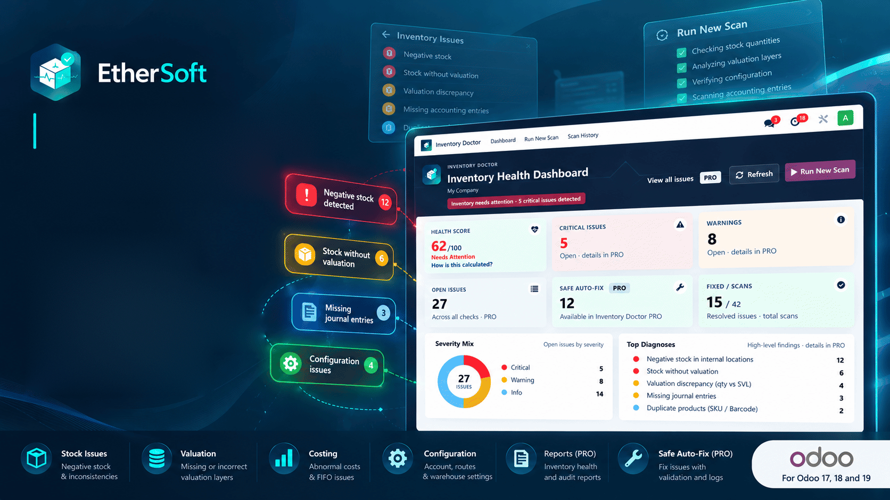
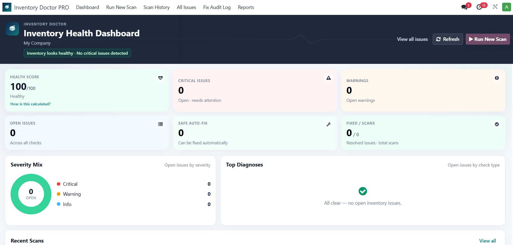
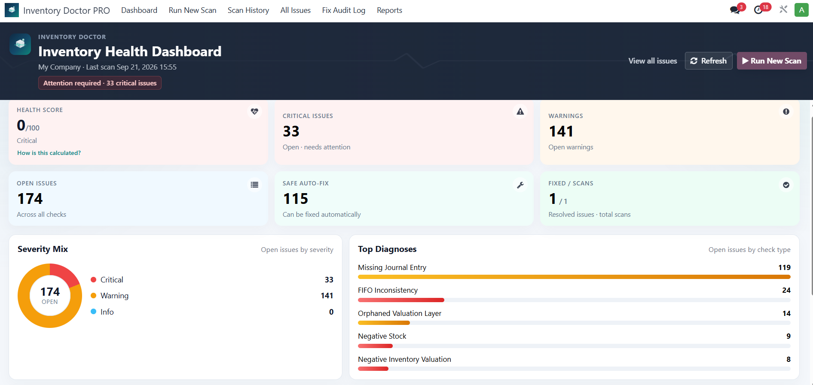

See inventory problems before they become accounting surprises.
Free diagnostic scanner for Odoo — real database scans, Health Score, Top Diagnoses, and 14 checks across stock, valuation, and costing integrity.
Run a scan and get a clear Health Score, open / critical / warning counts, severity mix, and which check types dominate — before issues become accounting surprises.

When issues exist, Free surfaces severity, open counts, and Top Diagnoses so operations and finance can see what dominates — without digging through stock moves and valuation layers by hand.

|
Dashboard
Health Score, open / critical / warning counts, and severity mix at a glance.
|
Scanning
Execute the full diagnostic engine against live stock and valuation data.
|
Insights
See which check types dominate and keep a basic history of past scans.
|
Free runs the complete detection suite. Detailed evidence and repair unlock in PRO.
Install EtherSoft Inventory Doctor PRO for detailed diagnosis, cause analysis, Safe Auto-Fix with preview for supported issues, Fix Audit Log, scan comparison, and PDF health reports.
mail, stock_account, purchase_stockInstall EtherSoft Inventory Doctor to scan your inventory health — then upgrade to PRO when you need diagnosis and safe repair.